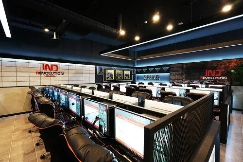

회사컴퓨터에 설치해서 월급루팡 하던 사원 A씨

pc방사장
대형태
회사컴퓨터에 설치해서 월급루팡 하던 사원 A씨

pc방사장
대형태
텐센트 잘못이라고 말하면 좆될듯 쩐주인데 쩐주 팃이에옹 어케함 ㅋㅋ
근데 진짜 텐센트 잘못이라서 탓이아니니깐
텐센트 서버쪽이 털린건데
텐센트 cdn이 털린거라 ㅋㅋㅋ
뭔일임? 런쳐에 백도어같은게 심어저있는거임??
PC런처 해킹당해서 런처 킨사람들 PC에 뭐 악성코드 깔렸다 그랬음
• 사건 개요: 2026년 9월 27일, 텐센트의 글로벌 게임 퍼블리싱 브랜드인 레벨 인피니트의 콘텐츠 전송 네트워크(CDN) 서버가 해킹당했습니다.
• 피해 내용: 해커들이 텐센트 COS 서버에 침투하여 인기 게임 '승리의 여신: 니케' PC 클라이언트 관련 자바스크립트(js) 파일 3개를 변조했습니다. 이 변조된 파일은 외부 도메인에서 악성 스크립트를 추가로 다운로드하는 로더 역할을 하였습니다.
• 사용자 피해: 9월 27일 이후 PC 클라이언트를 한 번이라도 실행한 이용자의 컴퓨터에 원격 제어(RAT) 악성코드가 무분별하게 유출 및 감염되었음이 최근(11월 초) 커뮤니티와 보안 분석을 통해 밝혀졌습니다. 현재 니케뿐만 아니라 레벨 인피니트가 서비스하는 다른 게임들로의 피해 확산 여부도 긴밀히 주시되고 있습니다
ㄳ
와 9월부터면 시바..
뭔 전후사정 설명도 없이 말하노
https://gist.github.com/MotherSphere/d6c049a09ba8ac3085c51ee9df24a4e5
무슨일인지 궁금한 사람은 위 참조하삼.
고마버요
사료좀 주면 좋다고 찬양하는게 이바닥
아좆댔다씨발 대응어케함.. 코덱스 돌려야겠네
그딴거없다게이야 걍 포맷해라ㅋㅋㅋ
아씨발ㅠ
포맷해야지
아..
저건 걍 포멧이 답임.
보안프로그램도 노답

포맷이 답이긴 해
이번 4주년 니케클라지? 2주년이후로 피시로 안하길 잘했네 휴
난 막차 타버림 9월초? 접었다가 요번 4주년이라서 했는데 해킹막차
회사컴으로 게임은 순도 100% 지팔지꼰이니까 달게 받도록
회사컴으로 게임하는 건 레전드네 ㅋㅋㅋ
하루종일 게임하면서 월루했다느니 자랑스럽게 말하는 애들 많음 도태되고 있는줄도 모르고
이러면 시프트업이 레벨인피니티한테 피해보상받을수 있나? 계약문제려나

이거랑 똑같은데
해커가 블붕이라 장난만치고빠짐ㅋㅋㅋ
이거랑 다른거는 이거는 블아 클라문제였는데.
저거는 ㅈ장깨좆센트 씹새끼들이 문제로 알고있음.
그 니케 중국 핵사건은 어케됨? 그거랑 이거랑 연관 있는거?
연관이 있을리가....
대응 ㅈ으로 하다가 욕 개쳐먹은뒤 꼬리짜르기로 핵유저 몇놈 쳐내고 후속대처도 말로만 잘할게 엔딩함
런처가 위험하구나
회사컴 외부 인터넷 안된게 다행이네
런처가 감염될줄이야
회사컴으로 게임 해보고 싶네 ㅋㅋㅋㅋㅋㅋㅋ
보상주고싶어서 이제는 악성코드까지 심는거냐?
유저사랑은 역시 대형태
아 ㅅㅂ 복귀 해볼까 하고 4일전에 pc에 깔았는데 참을걸
4주년 스토리 잘 뽑았던데 텐센트에서 똥가루를 뿌려버리네
해킹도 큰 문제지만 시프트업에서 아직 아무런 공지가 안올라온것임
예전 핵쟁이 사건때도 그랬지만, 게임 운영사인 텐센트에서 계속해서 터지고 있는데 일반인은 그런거 모르는 사람이 대부분임
시프트업도 충분히 인지 했으면 '현재 이러이러한 상황을 감지해서 내부적으로 확인중이니 추후 정리되는대로 추가 공지를 하도록 하겠습니다.' 라는 말만 올려도 민심은 안돌아갈건데 어휴...
오늘 새벽에 터져서 아침에 출근해서 확인하고 부랴부랴 뭐라도 하고 있지 않을까 싶긴해
예전에 핵쟁이 사태때도 그랬음... 중간공지 없이 활활 불타오르자 그제서야 부랴부랴 공지 냄
그것도 맞는데 현재 시프트업에서는 가장 문제는
자기 PC들도 조치 취하는 거 일껄?
일단 다들 임직원들 거진 대부분 니케 깔아뒀을텐데 회사 내부도 정신 없을꺼 뻔하긴해
상황 파악 되면 알아서 공지 올리겠지
물론 시프트업도 공지를 올리는게 맞긴 하겠지만
가장 먼저 공지 올려야 되는건 레벨 인피니트 텐센트 쪽이 먼저 올렸어야 하지 않을까 싶긴해 이번 문제는
사태 파악 + 본사 PC 확인하느라 정신없는거 이해함
근데 지금 이렇게 댓글로 '현재 레벨 인피니트에 해킹사태가 발생한것을 확인하여 내부적으로도 조사중이오니 유저분들 께서는 추후 공지가 올라오기 전 까지 PC 접속을 금지하여 주시기 바랍니다.' 라고 적는것도 1분이 안걸리는데 이것조차 니케 게시판에 올리지 않으니까...
회사컴으로 게임하면 안되는거임? 주말에 특근한다고 나와서 피방차려놓고 겜하는 좋소도 있는데
통신사해킹은 우스울 정도 인거같은데
피시방은 근데 요즘 거진 노하드거나 재부팅시 자동 포맷하게 되어있지 않나? 저건 뚫림?
런처 설치해놓는 pc방이있으니까요
휴 얼마전에 포멧하고 귀찮아서 안깔았는데
아나 귀찮게... 해커 시발러마
대충 '텐센트 잘못이지만 미안하다' 라고 사과문이랑 사료 몇개 던지면 해결